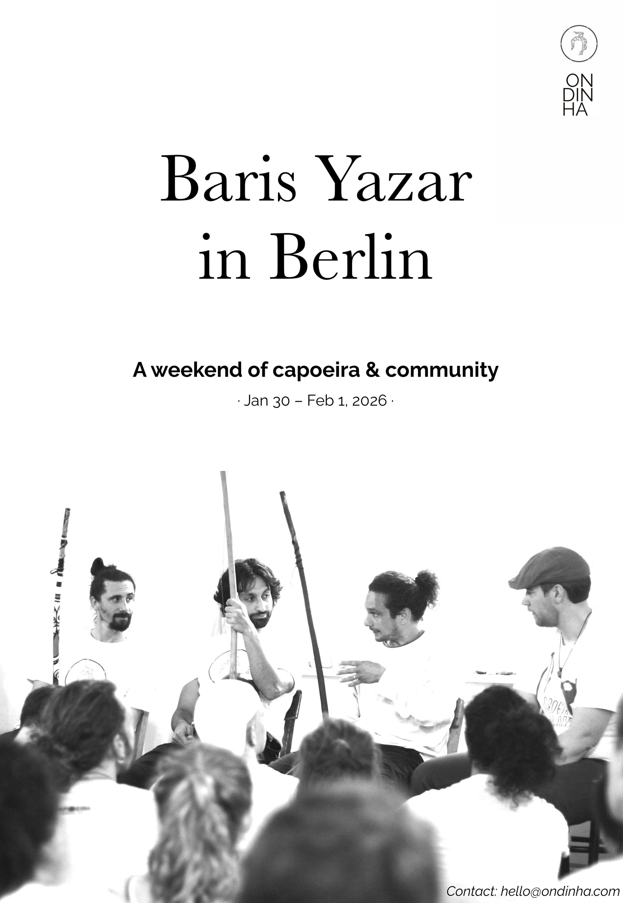

About Baris
Contramestre Baris is renowned for his deep knowledge of the body, based on three decades of experience in capoeira, yoga, dance, and physiotherapy. He has been a lecturer in Urban Dance at the University of East London for more than a decade. His teaching method focuses on embodiment, developing core principles of movement and dialogue, with the aim of building a grounded and connected capoeira game.
Event details
For this first annual event of Ondinha Capoeira Berlin, the focus will be on showcasing the work of our mestre, Baris Yazar. We will dive deep into his philosophy and approach to capoeira, developing our understanding over the course of the weekend.